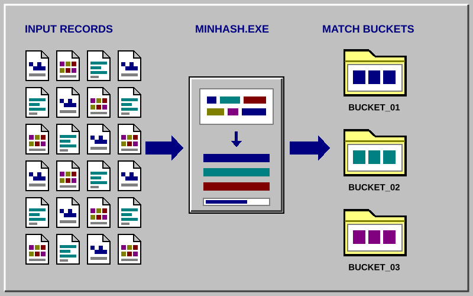

Computer Science Graduate | University of Victoria
I'm a Computer Science graduate from UVic with a background in math and statistics.
I'm interested in machine learning, distributed systems, and functional programming.
Recently, I built Drive Sorter, a desktop app that organizes Xbox Game Bar recordings using video metadata.
I had years of Xbox Game Bar clips scattered across my drives with useless filenames and no real
organization, so I built Drive Sorter to clean them up. It reads metadata directly from each recording
to figure out the game and date, previews exactly where everything will go, then organizes the clips
into a clean Game → Year folder structure. What started as a script for my own mess eventually
turned into a desktop app built to safely handle thousands of files.
Features:
Uses ffprobe metadata instead of filenames to identify each game and recording year
Scans clips concurrently and caches unchanged metadata for faster repeat scans
Previews and confirms file moves, safely handles naming collisions, and sends clips with missing metadata to Unsorted
Can flatten nested video folders, cancel active scans, and undo the most recent organize or flatten operation
What I Learned:
Building Drive Sorter pushed me to design file operations defensively. I separated scanning,
planning, and moving so users can review changes before they happen, kept slow metadata reads off
Tkinter's main thread, and added persistent history so completed operations remain reversible.
React, TypeScript, Game Design, CSS Animation, Vitest, Local Storage, GitHub Pages
Jan 2026 - Sep 2026
An NBA roster-building game that combines Deal or No Deal mechanics with more than 500
NBA players. Built with React and TypeScript, featuring rating-based rarity tiers, animated player
cards, strategic banker offers, local team saving, and a responsive retro interface.
Key Features:
More than 500 NBA players organized using NBA 2K-style overall ratings
Five rarity tiers with distinct visuals and animations
Position-based roster construction across PG, SG, SF, PF, and C
Dynamic banker offers based on the quality of the remaining players
Animated briefcase reveals and offer dialogs
Local saving for a player's best team
Locally cached player portraits for faster loading
Responsive Windows 95-inspired interface
Automated tests for game logic, player data, and saved teams
Technical Highlight:
I designed the game logic to generate position-specific cases and calculate banker offers based
on the quality of the remaining players. I also built a reusable rarity system that controls portrait
styling, visual effects, animation timing, and player-card behavior across briefcases, drafted teams,
saved teams, and banker offers.
Technologies: React, TypeScript, Vite, CSS animations, Vitest, ESLint, Local
Storage, and GitHub Pages.
A full-stack analytics application that transforms match-history CSV files into an interactive
performance dashboard. Users can explore win rates, map performance, game-mode results, consistency,
session fatigue, and correlations between gameplay metrics.
I built the frontend with vanilla JavaScript and D3.js, created a FastAPI backend for data
processing, and used PostgreSQL for persistence. The responsive interface uses subtle Windows
95-inspired styling, with the frontend deployed through GitHub Pages and the API hosted on Render.
Full-Stack Implementation:
Designed both the vanilla JavaScript and D3.js frontend and the FastAPI data-processing backend
Converted raw match data into focused insights across maps, modes, win rates, consistency, session fatigue, and metric correlations
Validated uploaded CSV files and handled malformed or incomplete records gracefully
Built several distinct interactive D3 visualizations with responsive layouts for smaller screens
Deployed the frontend and backend separately through GitHub Pages and Render, with PostgreSQL persistence
Added bundled sample data and graceful fallbacks for an unavailable, empty, or still-waking API
Audited and refined the existing codebase for clearer structure, accessibility, and reliability
Project Goal: Turn raw match-history data into a concise set of insights that
helps players understand their performance instead of simply displaying every available statistic.
Interactive website showcasing machine learning and AI concepts I've learned throughout my studies.
Includes visual demonstrations and implementations of various ML algorithms and techniques.
Key Features:
Visual demonstrations of supervised and unsupervised learning algorithms
Interactive examples showing neural networks, decision trees, and clustering
Explanations of key ML concepts with code examples
Built with modern web technologies for smooth interactivity
What I Learned:
Deep understanding of ML algorithm internals through implementation
How to explain complex technical concepts visually
Web development skills for creating educational content
ML pipeline that analyzes Call of Duty minimap images to predict map playability scores for
Hardpoint and Search & Destroy game modes. Extracts walkable space via alpha channel thresholding,
constructs navigation graphs, and computes geometric metrics to quantify map flow and rotation quality.
Pipeline:
Extracts walkable space from minimap images using alpha channel thresholding
Constructs navigation graphs from the walkable mask using NetworkX
Computes geometric metrics: betweenness centrality, path diversity, and choke point severity
Ridge Regression model predicts playability scores from geometry features
What I Learned:
This project taught me how to frame a subjective design problem — "does this map play well?" — as a
quantitative ML pipeline. Working with graph theory concepts like betweenness centrality to model choke
points, and learning when simpler regression models outperform more complex ones on small datasets.
An interactive map guide for Call of Duty: Black Ops 7 aimed at helping new players
learn maps, callouts, and objectives. Features a clean dropdown-based interface for
browsing game modes and maps. Focused on simplicity and clarity over complexity.
Features:
Dropdown-based navigation to select game modes and individual maps
Clear layout designed for quick reference during gameplay
Custom map images created in Photoshop using layered filters to achieve a distinct visual style
Deployed on GitHub Pages with Google Analytics for usage tracking
What I Learned:
This was a straightforward project focused on usability. The goal was to make something clean
and functional rather than flashy - building a tool I'd actually want to use. Creating the map
assets in Photoshop and experimenting with custom filters to get the right look was a fun creative
challenge alongside the web development side.
Scala, Apache Spark — Systems for Massive Datasets
Mar 2026
Built Scala implementations of foundational large-scale data algorithms using Apache Spark,
including Bloom filters, Flajolet-Martin cardinality estimation, reservoir sampling, MinHash,
and locality-sensitive hashing. The project explores practical distributed-computing tradeoffs:
partition-level aggregation, efficient data movement, and reducing expensive pairwise comparisons
when working with datasets too large for a single machine.

Streaming Algorithms (streams.scala):
Bloom Filter: Distributed membership testing using parallel BitSet aggregation across Spark partitions; computed optimal bit count and hash function count from false positive rate
Flajolet-Martin: Cardinality estimation of distinct elements via trailing zero counting and median-of-averages summarization across groups of hash functions
Reservoir Sampling: Uniform random sampling over a stream with standing query support, maintaining statistical guarantees as elements arrive
Similarity Search (minhash.scala):
Shingling & Jaccard: Tokenized documents into k-shingles and computed exact Jaccard similarity via set intersection/union over Spark RDDs
MinHash Signatures: Approximated Jaccard similarity using min-hash signatures to avoid full pairwise comparison
LSH Bucketing: Grouped documents into candidate pairs using band-based locality-sensitive hashing, reducing comparison space from O(n²)
What I Learned:
Working with Spark forced me to think carefully about what data needs to be distributed vs. what
can stay in the driver. Broadcasting large structures, using aggregate to build per-partition
accumulators, and understanding when distributed computation actually helps — these were the
real lessons beyond just implementing the algorithms themselves.
Optimized a stamp combination problem using dynamic programming in Haskell. Reduced runtime
from exponential to polynomial time by storing and reusing previously computed results instead
of recalculating them. This was my introduction to functional programming and efficient algorithm design.
The Challenge:
Given different stamp values (like 3¢, 5¢, 7¢) and a limit on total stamps used,
find the highest consecutive range of prices you can make starting from 1¢.
My Code:
largestReachable k stamps = findLastReachable 0 numStamps
where
numStamps = 0 : [minimum ([numStamps !! fromInteger (i - s) + 1
| s <- stamps, s <= i] ++ [k + 1])
| i <- [1..]]
findLastReachable :: Integer -> [Integer] -> Integer
findLastReachable i (x:xs)
| x > k = i - 1
| otherwise = findLastReachable (i + 1) xs
What It Does:
Builds up solutions from small values to large ones
For each value, finds the fewest stamps needed by checking all stamp combinations
Remembers previous results so it doesn't recalculate the same thing twice
Stops when it hits a value that needs too many stamps
Why It's Efficient:
Naive approach: Try every possible stamp combination - incredibly slow (exponential growth)
My approach: Save work by reusing previous calculations - much faster (polynomial growth)
Real impact: What might take hours with brute force runs in milliseconds with this approach
What I Learned:
This project taught me how to break down complex problems into smaller, manageable pieces and
how choosing the right algorithm can dramatically improve performance. It also introduced me to
functional programming, which approaches problems differently than traditional imperative programming.
Built an animated 3D scene demonstrating advanced graphics techniques including per-fragment lighting,
custom shaders, texture mapping, hierarchical transformations, and camera animation. Converted Phong
lighting from vertex to fragment shader for more accurate rendering, implemented Blinn-Phong model,
and created custom shader effects with detailed inline documentation. (don't judge a book by its cover)
Shader Programming:
Per-Fragment Lighting: Converted vertex shader lighting to fragment shader for more accurate illumination calculations on curved surfaces
Blinn-Phong Model: Implemented Blinn-Phong reflection model for more realistic specular highlights compared to standard Phong
Custom Shader Effects: Designed and documented custom GLSL shaders with line-by-line comments explaining the math and purpose
Proper normal transformation using normal matrix for correct lighting under transformations
Scene Features:
Hierarchical models with multi-level transformations (body parts connected logically at joints)
Multiple textures mapped meaningfully to objects beyond default UV coordinates
360° camera fly-around using lookAt() - camera circles while focusing on a central point
Real-time synchronization ensuring simulated time matches actual time
Frame rate monitoring displayed every 2 seconds
Technical Implementation:
Proper rotation of hierarchical elements around connection points to prevent visual breakage
Time-based animation using timestamp/delta time for consistent motion across different frame rates
Texture handling with HTTP server setup to bypass browser security restrictions
Clean code architecture with proper function separation and documentation
What I Learned:
This project deepened my understanding of the graphics pipeline, particularly the difference between
vertex and fragment shading. Moving lighting calculations to the fragment shader showed me how
per-pixel operations dramatically improve visual quality. Implementing Blinn-Phong taught me how small
mathematical optimizations (using half-vector instead of reflection vector) can both improve performance
and visual results. The custom shader work really cemented my understanding of GLSL and GPU programming.
Built an interactive 3D underwater scene from scratch using WebGL and GLSL shaders. Implemented
custom vertex and fragment shaders to handle lighting calculations (Phong illumination), managed
3D transformations with matrix math, and created procedurally generated geometry for spheres,
cylinders, and cones. Features animated fish, swaying seaweed, and bubble physics.
Graphics Programming from Scratch:
Custom Shaders: Wrote GLSL vertex and fragment shaders to calculate lighting per-vertex using the Phong illumination model (ambient + diffuse + specular)
3D Math: Manually handled all transformation matrices (translation, rotation, scaling) and their multiplication order to position objects in 3D space
Normal Matrix Calculations: Computed inverse-transpose of model-view matrix to correctly transform surface normals for lighting
Procedural Geometry: Generated sphere, cylinder, and cone meshes by calculating vertex positions and normals using parametric equations
Scene Features:
Animated fish swimming in a circle - calculated circular motion path and tangent vectors for orientation
Character with articulated legs - implemented hierarchical transformations with rotation constraints for realistic swimming motion
Swaying seaweed made from ellipsoids with sine-wave animation
Bubble system with randomized spawning and upward physics
Technical Challenges Solved:
Managing transformation matrix stack (push/pop) for hierarchical object modeling
Synchronizing real-time animations using delta time calculations
Calculating surface normals for curved geometry to achieve smooth lighting
Understanding GPU pipeline - how vertices flow from JavaScript through shaders to pixels on screen
What I Learned:
This project gave me a deep understanding of how 3D graphics work at a low level. Instead of using a game engine, I had to implement everything from scratch - the math behind projections, how lighting actually works on surfaces, and how the GPU pipeline transforms 3D coordinates into 2D pixels. It's one thing to use a graphics library, but actually implementing the rendering pipeline yourself really cements the concepts.
Led prototyping and flow design for UVic gym booking system. Created interactive prototype
for booking, live occupancy, and schedules. Built components, click-through flows, and Draw.io
diagrams to map user interactions. Conducted user research and usability testing with a 4-person team.
Project Scope:
Redesigned the existing UVic gym booking interface to improve user experience
Added live occupancy tracking to help students plan their visits
Streamlined the booking flow to reduce confusion and errors
Created schedule views for classes and equipment availability
My Role:
Led the prototyping effort in Figma, creating all major screens and interactions
Built reusable components for consistent design across the app
Created click-through prototypes for user testing sessions
Developed workflow diagrams to document system processes and user flows
Outcomes:
User testing revealed 40% faster booking completion times
Identified and fixed major pain points in the original interface
Delivered a complete prototype ready for development handoff
Delivered friendly, accurate front-counter service by taking orders, answering questions, and communicating wait times during high-volume shifts
Resolved order issues and customer concerns calmly, coordinating with kitchen staff to provide prompt solutions
Balanced customer service, cooking, and dishwashing responsibilities while shifting priorities to keep operations moving and maintain food safety standards
Warehouse and Delivery Assistant
Vancouver Island Brewing, Victoria, BC
May 2024 - Aug 2024
Prepared and organized shipments for daily delivery routes, verifying orders and loading vehicles in an efficient stop sequence
Supported route planning and deliveries across Victoria, adapting schedules around order priorities, traffic, and timing constraints
Coordinated with warehouse and delivery staff to resolve missing items, last-minute changes, and other logistics issues while keeping orders accurate and on schedule
Bachelor of Science in Computer Science
University of Victoria
Sep 2021 - Spring 2026
Graduated: Spring 2026
Focus: Machine Learning, Data Visualization, and Distributed Systems